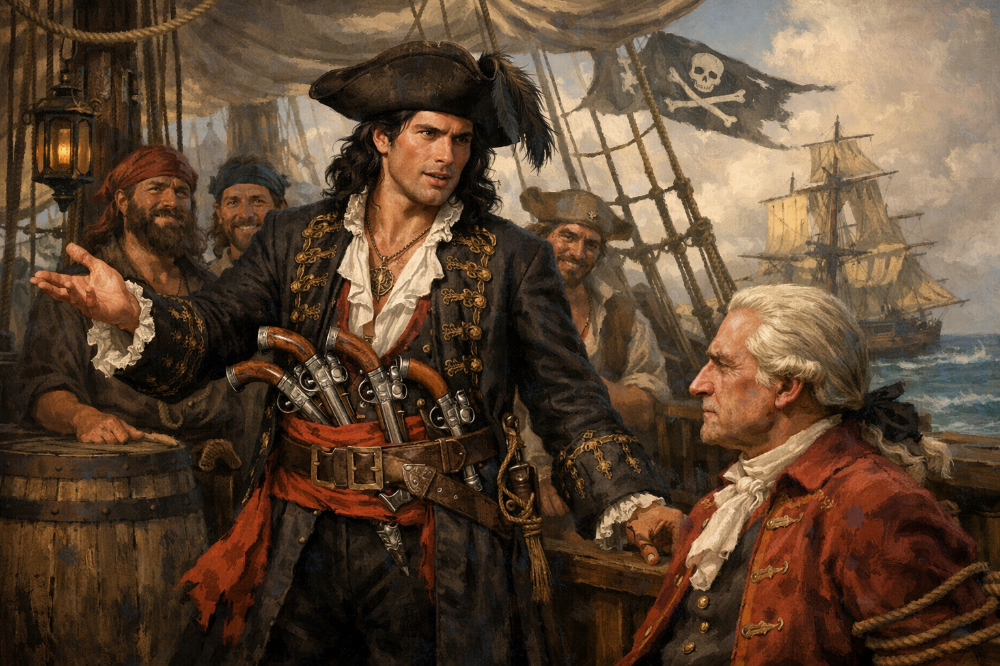
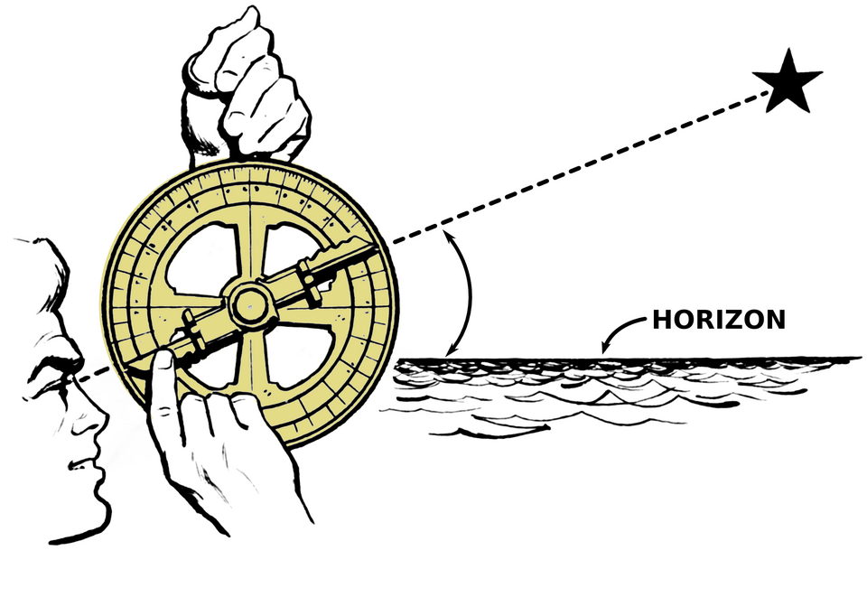

Overview
Welcome to your home base for the Whydah unit. Five weeks on a slave ship that turned pirate, wrecked on Cape Cod in 1717, and was rediscovered in 1984. Use the tabs across the top to explore. Every tab has a gist box like this one to help you get your bearings before diving in.
Welcome
This is the planning and teaching dashboard for the LEAP4Ed Summer 2026 middle-school unit on the Whydah Gally - a slave ship captured by pirate Sam Bellamy in 1717, lost in a storm off Wellfleet 10 weeks later, and rediscovered by Barry Clifford in 1984. The first authenticated Golden Age pirate wreck.
The unit runs five weeks (July 6 - August 6, 2026) at Collins Middle School, Salem. Two sections of about 20 students each, ages 11-13, 90 minutes per session. Every student keeps a Voyage Journal across 16 instructional sessions and a field trip, then builds a final project in a format they pick from a 13-option menu, presented at a public Showcase on August 6.
The unit''s spine is cartography: students learn to read and make maps before they get deep into the history. From there it opens out into the Atlantic trade Bellamy sailed through, the moral complexity of why people chose piracy in the first place, and the modern chokepoints (Suez, Malacca, Panama) where the same logic plays out today.
COURSE-ESSENTIALDriving question
"Why would a person choose piracy in 1717 — and how would they want you to tell their story?"
ESSENTIALFour supporting questions (one per week)
- How do people use maps and navigation to exercise power — in 1717 and today?
- What do Atlantic trade routes tell us about who benefits and who suffers from global commerce, then and now?
- How does geography shape the choices people can make — from 18th-century piracy to modern chokepoints like Suez, Malacca, and Panama?
- Whose stories get mapped, and whose get buried — across time?
ESSENTIALThree threads running through the whole unit
- Cartography and navigation. Maps are the tool. We learn to read and make them first. The Whydah story holds together on cartography too: Cyprian Southack's 1717 salvage map is what Barry Clifford used in 1984 to find the wreck.
- The Whydah's Atlantic world. The ship's journey carries everything else: trade, slavery, piracy, the wreck, the recovery.
- Modern Oceans. Suez, Bab-el-Mandeb, Panama, Malacca, container shipping, the Houthi attacks. Same chokepoint logic as 1717, different water.
- Running through all three: a social justice lens - whose stories get told, whose get buried. Not a separate pillar; the constant theme across cartography, the Atlantic world, and modern oceans.
How we're holding the moral complexity
The Whydah's crew were escaping real brutality and they stole for a living. The Ship's Articles were democratic and they were a mutiny. A member of Parliament funded the ship as a slaver. We want students to understand these choices without glorifying or condemning them — no flattening either direction.
ESSENTIALVoyage Journal + final project
Students keep a Voyage Journal across the whole unit — one deliverable per session, 16+ artifacts accumulated by Week 5 (maps, writing, analysis cards, sketches, character notes). The final project is a new piece built from the Journal: students pick a perspective and a format (13 options), and every final project cites at least 3–4 Journal entries as source material.
See the Voyage Journal tab for session-by-session deliverables and the full final project format menu.
ESSENTIALField trips
- Field Trip 1 (Week 2, Thursday July 16): Two-section rotation. Section A morning at Real Pirates Salem (Whydah scavenger hunt); Section B morning at Salem Maritime NHS (the Friendship replica East Indiaman + Derby Wharf + Custom House). Swap at lunch. Walking distance between sites. Curator-led at Real Pirates if we can swing it through Frank Cutietta.
- Field Trip 2: TBD
COURSE-ESSENTIALThe 5-week arc
Each week has its own focus and Key Student Question. The Three Threads (cartography · Atlantic world · modern oceans) run through every week, with the social-justice lens cutting across all of them.
| Week | Theme | Key Student Question | Anchors |
|---|---|---|---|
| 1 | Maps & Power | How do people use maps and navigation to exercise power - in 1717 and today? | cartography skills |
| 2 | The Triangle Trade | What do Atlantic trade routes tell us about who benefits and who suffers, then and now? | Atlantic world; Middle Passage |
| 3 | Piracy as Choice | How does geography shape choices - from 1717 piracy to modern chokepoints like Suez, Malacca, and Panama? | modern oceans bridge; field trip |
| 4 | The Wreck & Recovery | Whose stories get mapped, and whose get buried - across time? | primary sources; Clifford 1984 |
| 5 | Justice, Synthesis & Showcase | Whose Whydah have we mapped - and how will we present it? | final project; public Showcase |
Live - the same Atlantic, right now
For the full GIS toolkit, head to the Maps & Tools tab. For projections, latitude, and longitude, see Projections & Coordinates.
Voyage Journal — the running portfolio
COURSE-ESSENTIALHow the Journal and the final project work together
The Voyage Journal is a running binder — physical or digital, student choice — that grows one entry per session. Every entry is small and finishable in a single class period: a map, a short reflection, a T-chart, an analysis card. The goal is to build up raw material across the whole unit.
The final project is a new piece in a format the student picks from the menu below, built from the Journal. Every final project has to cite at least 3–4 Journal entries as source material. The Journal is the evidence of process; the final project is the synthesis they present.
At the Showcase, final projects get presented; Journals lay open on tables for visitors to flip through.
What each session produces
Week 1 — Maps & Power
July 6–9Week 2 — The Triangle Trade
July 13–16Week 3 — Piracy as Choice
July 20–23Week 4 — The Wreck & Recovery
July 27–30Week 5 — Synthesis & Showcase
Aug 3–6COURSE-ESSENTIALFinal project format menu (13 options)
| Format | What it looks like |
|---|---|
| Google My Maps story map | 8–10 annotated locations along the Whydah's journey, told in the chosen voice |
| Google Slides presentation | 10–12 chapter-structured slides with images, quotes, evidence |
| Live performance | 3–5 minute monologue or two-person scene at the Showcase |
| Illustrated narrative poster | Visual timeline or map with embedded written reflection |
| Character mini-book | Handmade 8-page folded book written in the chosen character's voice |
| Podcast episode | Audio monologue or simulated "interview" with a character |
| Letter sequence | Correspondence in character — 4–6 letters tracking a perspective |
| Museum exhibit board | Artifacts + labels curating a single perspective's story |
| Graphic novel spread | 4–6 illustrated panels telling a scene from a perspective |
| Newspaper front page | 1717 broadside-style reporting on the Whydah or a capture |
| Google Earth narrated tour | Screen-recorded flythrough with voiceover in character |
| Ballad or sea shanty | Original song lyrics in period style, optionally performed live |
| Student pitch | Anything else with teacher approval |
Timeline — the Whydah's story
The whole story in order, from before Bellamy was even born to today's ongoing dives at the wreck site. Every event has a tier: SOLID = good evidence, CONTESTED = still debated, MYTH = legend, made up later. Read top to bottom for the full arc.
People & Ships
The actual people who lived this story — pirates, captains, judges, witnesses — plus the ships they sailed and lost. Each card tells you who someone was, what they did, and how to use them in your final project. Cards are grouped: the Whydah's people, the British shipbuilders, the wider pirate world, the trial figures, and the four ships in Bellamy's fleet on the night of the wreck.
The Whydah's people


- Born Devon, England; mother died in his birth
- Became ship's boy at age 13 (~1702) during the War of Spanish Succession
- Served in Royal Navy as a young sailor
- Arrived at Cape Cod by 1714–early 1715 (the "Maria Hallett" name is a 1934 literary invention)
- Captured 53+ ships in ~1 year; died at 28 in the wreck
- Cruised with Paulsgrave Williams and French pirate Olivier La Buse through 1716; the plan on April 26, 1717 was to split (Bellamy to Cape Cod, Williams to Block Island) and regroup at Damariscove Island, Maine - the storm wrecked it
- Forbes (2008) ranked him the highest-earning pirate of all time at ~$120M in 2008 dollars - a record Guinness World Records confirmed in 2023
- Reputation for releasing captured crews with relatively little violence — real and somewhat mythologized by Johnson 1724
- Colin Woodard's framing: "Fight smart, harm few, score big"
- Half-Miskito Indian from the Mosquito Coast (Nicaragua/Honduras)
- Pilot of the Whydah at age 16
- One of only 2 Whydah crew to survive the wreck
- Not tried — sold into slavery to John Quincy (grandfather of President John Quincy Adams)
- Multiple escape attempts; executed in 1733 after killing the bounty hunter who tried to recapture him (per Provincetown Independent, 2025; 1999 National Geographic)
- 16 years from teen pilot to executed escapee — exactly the span of the wreck-to-death arc
- Passenger on merchant sloop Bonetta with his mother (Jamaica → Antigua)
- Bellamy captured the Bonetta Nov 9, 1716; looted her for 15 days
- King demanded to join the pirates, threatened to kill himself if restrained, threatened his mother
- Died in the Whydah wreck, age at most 11
- Remains identified 2006: 11-inch fibula in a shoe and silk stocking
- Wealthy Rhode Island silversmith — class contrast to Bellamy
- Supplied the sloop; Bellamy supplied the nav skill
- Whydah's quartermaster
- Survived the wreck by accident — stopped at Block Island to visit family while rest of fleet sailed on
- Returned to Rhode Island civilian life; died after 1723
- The other Whydah crew member to survive the wreck
- Claimed he had been forced into piracy
- Acquitted at the Boston trials and freed
- Experienced slaver who sailed the Whydah in 1716
- Delivered 312 of 367 captives alive to Jamaica
- Surrendered to Bellamy Feb 28, 1717 after a 3-day chase
- Bellamy let him and his crew go — gave them the Sultana
- Master of the Irish-flagged wine pink Mary Anne, captured by Bellamy off Nantucket the morning of April 26, 1717
- Cargo: ~7,000 gallons of Madeira
- Transferred to the Whydah as a prisoner — drowned in the wreck the same night (Davis deposition, Trials p. 318)
- His brother-in-law James Dunavan and cook Alexander Mackonachy were aboard the Mary Anne when she also wrecked — they survived
- One of the seven pirates Bellamy put aboard the Mary Anne as prize crew on April 26, 1717
- Threatened to shoot cook Alexander Mackonachy in the head when Mackonachy tried to steer the ship off course (Dunavan deposition)
- Mackonachy went on to inform local authorities, leading to the pirates' arrest at Eastham
- Hanged at the Charlestown gallows, November 15, 1717
- Boston attorney appointed by the Vice-Admiralty Court to represent all seven Mary Anne pirates
- Resigned in protest after his motions were denied — including a motion to admit Davis's testimony in the Mary Anne pirates' favor (Trials, pp. 297, 299)
- The illiterate pirates then defended themselves; six were convicted and hanged
- Cape Cod local; one of the few Wellfleet residents we can name from the immediate aftermath
- Sheltered Davis and Julian (the only two Whydah survivors) when they came ashore on the morning of April 27, 1717
- Then went down to the beach to scavenge from the wreck — the first documented Cape Cod "moon-cusser" plunderer of the Whydah, before Southack arrived from Boston
- Named in the Trial depositions
The British establishment that built the ship
- Member of Parliament
- "The foremost London slave merchant of his day"
- Commissioned the Whydah's build in 1715 as a slaver
- Evidence that British slavery was a government-connected enterprise, not a distant private affair
The wider pirate world
- Former privateer; organized Nassau as a pirate haven ~1715
- Mentored both Bellamy AND Blackbeard aboard the Marianne
- Deposed summer 1716 — his crew voted him out because he refused to attack English ships
- Took King's pardon 1718, became a pirate-hunter; died at sea ~1719
- Served under Hornigold alongside Bellamy
- Captured La Concorde → renamed Queen Anne's Revenge, 40 guns, 300 crew
- Blockaded Charleston 1718
- Killed at Ocracoke NC, Nov 22, 1718 — 19 months after Bellamy
- Deliberately cultivated terrifying image (fuses in beard)
- French pirate operating jointly with Hornigold and Bellamy in late 1716 (Davis deposition, Trials p. 318; Brown deposition)
- His sloop Postillion + Bellamy's Sultana together captured the merchant ship St. Michael in December 1716, taking Welsh carpenter Thomas Davis as a forced man
- Held captives at the island of Blanco; transferred them to Bellamy's ship in January 1717
- Drops out of the record after early 1717
- The key cast member missing from most popular accounts of Bellamy's career
The investigators (1717 to today)
- "New England's first native chart maker"
- Commander of the Bay Colony's naval militia
- Sent by Gov. Samuel Shute in 1717 to salvage the wreck; recovered almost nothing
- Marked the wreck's location on his New England chart
- That 267-year-old map is how Barry Clifford found the Whydah in 1984
- Discovered the wreck in 1984 using Southack's map
- Recovered the bell in 1985 — first authenticated Golden Age pirate wreck
- Has led the excavation via Expedition Whydah ever since
- Some controversy in archaeology community about salvage vs. academic methods
- Joined Expedition Whydah 1986; 27 years as Director of Research
- Compiled the Whydah Sourcebook
- Established that ~25% of Bellamy's crew was Black
- Co-authored Real Pirates: The Untold Story of the Whydah (with Clifford & Simpson)
Boston & Salem trial figures

- Son of Increase Mather, grandson of Richard Mather
- Complicated role in the 1692 Salem Witch Trials — his Wonders of the Invisible World defended the court
- Ministered to the Whydah pirates in Boston jail
- Preached the Nov 15, 1717 execution sermon at Boston Common
- Published "Instructions to the Living, from the Condition of the Dead" (1717) — an existing primary source

- One of the 1692 Salem Witch Trial judges
- In 1697 published a public apology for his role — the only Witch Trial judge to do so (Sewall's apology)
- Presided over the Whydah pirate trials in Boston, October 1717
- 20 years between his witch-trial regret and his pirate-trial role
Other voices we use
- The affair is documented; the name has been contested for decades
- Elizabeth Reynard's 1934 novel The Narrow Land popularized the name "Maria"
- Ken Kinkor's archival research found a young woman of that name was actually living in Eastham at the time (per Colin Woodard, Republic of Pirates, 2007), but a direct documentary link to Bellamy is not proven
- Local folklore also calls her the "Witch of Wellfleet"

- Author of The Interesting Narrative of the Life of Olaudah Equiano (1789)
- Captured 1756 — NOT Whydah-era (his narrative is 40 years after the wreck)
- Used as a Middle Passage voice, not a Whydah voice
- Scholarly debate about African vs. American birth
Other Golden Age figures - visual primary sources from 1724


The fleet - Bellamy's four ships on April 26, 1717

| Ship | Role | Captain | Fate |
|---|---|---|---|
| Whydah | Flagship, 28+ guns | Sam Bellamy | WRECKED at Wellfleet · 2 survivors of 146 aboard |
| Marianne | 10-gun sloop (Hornigold's old ship) | Paulsgrave Williams | Survived · Williams at Block Island visiting family |
| Anne Galley | Captured consort | Richard Noland (former quartermaster) | Separated from fleet; survived |
| Mary Anne (pink) | Prize captured the same day, April 26 — loaded with Madeira wine | Bellamy's prize crew of 7 | Also wrecked April 26, south of Whydah · all 10 aboard survived (shallow wreck) |
The "7 additional survivors from a sloop" often referenced are the Mary Anne's prize crew (7 pirates Bellamy had put aboard that afternoon) plus 3 original crew, of whom all 10 made it ashore when she wrecked in shallower water.
What we can do with this in class
Four ships in one storm. Two survived. Williams was at Block Island visiting family, so his sloop got out. The Anne Galley got separated and survived. The Mary Anne wrecked too but in shallower water, so all 10 aboard walked off. Bellamy's Whydah took the worst of the wind on a lee shore at Wellfleet, with John Julian (16) on the wheel and no way to know their east-west position. Two of 146 survived. Use this in S13 to teach the wreck as four parallel outcomes, not one event.
Why Cape Cod, specifically? Hanna's "hostile shore" theory.
Historian Mark Hanna says the wreck wasn't just bad luck and bad weather — it was politics. For years before 1717, port towns from Newport to Boston to Charleston quietly welcomed pirates: buying their stolen goods, fixing their ships, and looking the other way. Then in 1713, the Treaty of Utrecht ended the war between England and Spain, and new laws made it a serious crime to help pirates. The same coastal towns that used to roll out the red carpet now had to arrest them.
By April 1717, Bellamy was attacking the very coast that, fifteen years earlier, would have welcomed him. So the wreck happened for two reasons stacked on top of each other: Bellamy didn't have the navigation tools to find his way (the longitude problem) AND he was on a shore that had recently turned hostile. The Boston judges who sentenced his crew had only just decided pirates were the enemy.
📚 Going deeper: the academic debate
Hanna's argument is the major scholarly counterweight to Marcus Rediker's Villains of All Nations (2004), which reads pirates as a working-class proto-democracy resisting authority from below. Rediker is right at the lower-deck level: pirate crews voted on captains, signed Articles, and were unusually multi-racial. Hanna is right at the shore level: the same crews depended on elite merchants and governors who profited from their stolen goods. The most academically honest Bellamy narrative holds both at once — pirate crews internally democratic AND on-shore sponsors as merchant elites AND, once elite protection ended, Bellamy died on a coast that had turned hostile.
Pair this section with Anderson 1995's "episodic piracy" framing and the Rediker working-class-counter-society reading for the moral-complexity capstone in S17.
Free public version of Hanna's argument: "A Lot of What Is Known About Pirates Is Not True", NEH Humanities, Winter 2017. Classroom-assignable, no paywall.
Primary-source spotlight — the survivors' own depositions
Thomas Davis on the wreck (Trials, p. 318)
"The Ship being at an Anchor, they cut their Cables and ran a shoar, in a quarter of an hour after the Ship struck, the Main-mast was carried by the board, and in the Morning She was beat to pieces. About Sixteen Prisoners drown'd, Crumpstey Mast of the Pink being one, and One hundred and forty-four in all."
Two things in this quote rewrite the popular story. (1) The Whydah was anchored when the storm hit — Bellamy's crew deliberately cut their own cables to try to beach her, rather than being driven uncontrolled onto the bar. (2) Captain Andrew Crumpstey of the Mary Anne was aboard the Whydah and drowned — primary confirmation, ending earlier ambiguity about his fate.
Peter Cornelius Hoof on the treasure (Trials, p. 319)
"The money taken in the Whido, which was reported to Amount to 20000 or 30000 Pounds, was counted over in the Cabin, and put up in bags, Fifty pounds to every Man's share, there being 180 Men on Board… Their Money was kept in Chests between Decks without any guard, but none was to take any without the Quarter Masters leave." In plain English: The money on the Whydah was about £20,000-30,000 pounds sterling - a fortune. They counted it in the captain's cabin and put it in bags. Every man on board got £50 - fair shares, no matter your rank. There were 180 men aboard at the count. The money sat in chests between decks with no guard, but you couldn't grab any without the Quartermaster's permission.
- £20,000–30,000 sterling — Hoof's contemporaneous figure. More grounded than the breathless weight numbers in popular accounts.
- £50 per man, even share — primary-source confirmation of Bellamy's flat distribution. The pirate-democracy claim has at least this much documentary support.
- 180 men aboard at division vs. 146 at the wreck — the gap is prize-crew attrition, men placed on captured vessels in the weeks before the storm.
- Treasure stored in chests between decks, unguarded, but governed by the Quartermaster's authority — not by force.
James Dunavan on the Mary Anne pirates and the Common Prayer Book (Trials)
"…the Pinks Company could not see the Shoar till they were among the Breakers… the Prisoners at the Bar or some of them… Cryed out saying, For God's sake let us go down into the Hould & Die together. And the whole pinks Company tarry'd on Board her all that Night: And in their Distress the Prisoners ask'd the Deponent to Read to them the Common-Prayer Book…"
Two notable additions. (1) The Mary Anne pirates — facing storm, shore, and certain capture — asked to die in the hold together, then asked their captives to read them Anglican prayer through the night. Useful for any session on what pirates actually believed about death and dying. (2) The deposition lists three vessels visible before grounding ("the Pirate Ship, Snow and Sloop") — Bellamy's fleet at the moment of the storm was at least four vessels (Whydah + Anne Galley snow + Mary Anne pink + Fisher sloop), corroborating the four-ships table above.
Why piracy — push/pull causal map
Why would anyone become a pirate in 1717? This page lays out the reasons. Push factors are what pushed sailors away from regular jobs (bad pay, brutal navy, war ending). Pull factors are what pulled them toward piracy (real money, voting on the captain, fairer crew rules). At the bottom, the historians' debate: were pirates rebels from the bottom up, or partners with rich merchants from the top down? Both, at different times.
Push Factors — away from alternatives

Pull Factors — what piracy offered
And one more anti-romantic fact. Pirates significantly disrupted the Atlantic slave trade in the 1710s–20s — enough that European powers made wiping out piracy a top priority. But the slave trade rebounded: by the 1730s it had doubled compared to the late 1710s/20s peak of piracy. Pirates interrupted; they didn't stop. We hold all of these halves.
Maps, geography & tools
The cartography side of the story. Start with the 3D Whydah Flythrough — fly between all 19 stops in the Bellamy story on a real globe. Then real maps from 1717, the navigation tools the Whydah's 16-year-old pilot would have used, and live webcams of the same Cape Cod beaches today. Click any ▶ "Click to load" tile to start a live cam.
The Whydah flythrough - interactive 3D tour
A 19-stop, 3D globe flythrough of the Bellamy story, from his birthplace in Devon to the modern Salem museum. Each stop shows a photo and a "why this matters" caption while the camera does a slow 180-degree pan around the location. Hit play to start, or jump to any stop via the "All stops" button.
🔬 Going deeper: how this 3D flythrough was custom-built (GIS teaching artifact)
1. Coordinates from primary sources. Every one of the 19 stops has a real lat-lon pulled from the research-findings reference. Some are documented to within a few meters (Old State House: 42.359N, 71.058W). Others are approximate by necessity. The Whydah wreck site is given as the publicly cited area off Marconi Beach because the exact coordinates are restricted under Clifford's federal salvage permit.
2. The map engine - MapLibre GL JS. The 3D globe is rendered with MapLibre GL JS, a free and open-source rebuild of Mapbox GL JS after Mapbox went proprietary in 2020. No API key, no signup, just a 250 KB JavaScript library included in the page.
3. The satellite imagery - Esri World Imagery. The Earth's surface comes from Esri's World_Imagery tile service - a stitched mosaic of Maxar, USGS, NASA, and aerial sources. Free for educational use, no API key required for raster tiles.
4. The camera animation. Each transition between stops uses three animated phases: a 2.5-second zoom-out arc to the geographic midpoint between stops (so students see the spatial relationship), a 3.5-second smooth flyTo into the next location with arrival pitch and zoom tuned per spot, then a 15-second slow 180-degree pan around the destination. The pan is driven manually frame-by-frame because MapLibre's built-in flyTo normalizes bearings to take the shortest path - 0 to 359 degrees collapses to -1 unless you drive setBearing yourself.
5. The captions. Photos and "why this matters" descriptions are HTML and CSS overlays that fade in and out with each stop. Photos reference the pics/ folder via relative paths so the same file works locally and on github.io. Each caption has a stop-number label, location name, subtitle, body text, and citation footer.
6. The waypoints data. All 19 stops are stored as a JavaScript array near the top of flythrough.html. Each entry has lng, lat, zoom, pitch, name, subtitle, description, image, meta. Editable in any text editor. Students can add their own stops as a research extension, reorder them, or rewrite descriptions.
The 19 stops
| # | Location | Coords | Why this hinges the story |
|---|---|---|---|
| 1 | Hittisleigh, Devon, UK | 50.745N 3.823W | Devon was 18th-century England's nursery for the Royal Navy. Bellamy's path to sea was set the day he was born here. |
| 2 | London | 51.510N 0.099W | London capital funded the slave-trade economy. The Whydah was destined for triangle-trade work the day she was launched here. |
| 3 | Ouidah, Benin | 6.36N 2.09E | 367 enslaved Africans taken aboard. The human source of the wealth Bellamy will later steal. |
| 4 | Kingston, Jamaica | 17.94N 76.84W | 312 of 367 enslaved people sold here, 55 dead in the Middle Passage. The treasure Bellamy later takes is the proceeds of human sale. |
| 5 | Sebastian Inlet, Florida | 27.86N 80.45W | The pivot of Bellamy's life. He came as a legal salvager and left as a pirate. Without 1715's hurricane, no Bellamy career. |
| 6 | Nassau, New Providence | 25.04N 77.35W | The political home of pirate democracy. Where ~90 men actually voted Bellamy into command. |
| 7 | Windward Passage | ~20.0N 73.5W | Career peak. From here Bellamy commands the largest, richest pirate flagship of the entire Golden Age. |
| 8 | Block Island, RI | 41.18N 71.58W | The fleet splits here. Williams' detour to visit family accidentally saves his life. |
| 9 | Damariscove Island, Maine | 43.760N 69.617W | The ghost of what Bellamy was trying to do. He died ~150 nautical miles short of this harbor where he meant to careen the ships. |
| 10 | Off Chatham, Cape Cod | 41.65N 69.95W | The first wreck of the night. The Mary Anne survivors gave us the trial depositions. Without them, the Whydah story would be silent. |
| 11 | Marconi Beach, Wellfleet | 41.892N 69.962W | The climax. 144 of 146 die in 15 minutes. Bellamy dies. The historical record of all of this begins here. |
| 12 | Provincetown | 42.05N 70.18W | The shift from crime to aftermath. A royal commissioner arrives; the Whydah becomes a salvage opportunity for the Crown. |
| 13 | Jeremiah's Gutter | 41.79N 69.985W | A 1.5-mile tidal cut Southack used to shortcut the outer Cape. Today the gutter is gone, severed by Route 6's rotary. |
| 14 | Old State House, Boston | 42.359N 71.058W | Where the Atlantic legal system reached out. Bellamy died at sea; his crew died here. Same Salem Witch Trials establishment, 25 years on. |
| 15 | Charlestown gallows site | 42.378N 71.063W | The gallows location was chosen at the low-tide mark. Geography tells you who could hang you. Site now buried under harbor fill. |
| 16 | Wellfleet wreck site, 1984 | 41.892N 69.962W | The Whydah comes back, 267 years later. Clifford reading a 1717 chart and modeling sand drift IS GIS work. |
| 17 | Whydah Pirate Museum | 41.654N 70.224W | Where 200,000+ artifacts live now. Every coin was held by a pirate. Every bone fragment was a person. |
| 18 | Real Pirates Salem | 42.520N 70.882W | The Whydah arrives in Salem - the city our students live in. Their connection to the story. |
| 19 | Salem Maritime NHS | 42.521N 70.886W | The coda. Same waterfront sent the Grand Turk to Mauritius two generations later. Bellamy to Haraden to Derby is one Atlantic story. |
Live cams on Bellamy's coast
The same Massachusetts coast Bellamy died on, watched live in 2026 via masswebcams.com - a directory of 200+ public webcams across the state. Useful as a "modern bridge" tool: students can compare Southack's 1717 chart to right-now imagery of the same beaches.
Cahoon Hollow Beach - Wellfleet outer beach, live
The closest reliable live video to the Whydah wreck site. Cahoon Hollow is the public beach immediately north of Marconi Beach (where the Whydah grounded in 1717) - same outer-Cape sandbar geography, same nor'easter exposure. The cam is a 24/7 YouTube live stream from the Beachcomber bar/restaurant.
Provincetown Harbor - Southack's arrival, live
Provincetown is where Cyprian Southack arrived by sea from Boston in May 1717 with his royal commission to salvage the Whydah. He hired a whaleboat here rather than sail around the dangerous outer Cape. This live cam looks out over the harbor he sailed into.
Cape Cod Canal - the modern bridge
Two live cams on the Cape Cod Canal - the modern engineered shortcut across the base of Cape Cod that opened in 1914. Useful counterpoint to Jeremiah's Gutter, the 1.5-mile tidal cut Southack used in 1717 that has since been buried under Route 6's rotary. Same idea, separated by 200 years and the engineering of the Industrial Age.
North Shore - the students' own coast
Salem and the towns around it sit on the same outer-coast Atlantic Bellamy's crew rounded en route to Damariscove, Maine. These are live cams along that 30-mile arc north of Salem - water our students see from their windows.
Marconi Beach (USGS scientific cam) - the actual wreck site
Two USGS Coastal and Marine Geology Program snapshot cameras at Cape Cod National Seashore station caco-05 - the public scientific cameras closest to the Whydah wreck. These update on a slow schedule and are dark/uninformative outside daylight hours; the live YouTube cams above are usually more visually useful.


More cams (link-only)
- Marconi Beach, Wellfleet - the USGS cams above on their source page.
- Cahoon Hollow Beach (Beachcomber Cam) - just north of the wreck site, same outer-beach coastline.
- Wellfleet Oyster Cove (inner harbor) - the bay side, where Southack would have hugged the coast in his whaleboat.
Other Whydah-relevant locations
- Provincetown (MacMillan Pier, Harbor Hotel cams) - where Southack arrived by sea, May 1717.
- Cape Cod Canal - modern engineering on the same coast. Compare to Jeremiah's Gutter, the 1717 tidal canal that vanished.
- Boston Harbor - 25 minutes by water from the Charlestown gallows site.
Navigation instruments — what was on the Whydah
 Compass
Compass
 Backstaff
Backstaff

QuadrantWhat DIDN't exist yet in 1717
 Octant
Octant
 Sextant
Sextant
 Marine chronometer (Harrison's H4)
Marine chronometer (Harrison's H4)
The longitude problem — a 1717 reality check
In 1717, sailors could reliably find their latitude (north-south position). They could NOT reliably find their longitude (east-west position). The best method available was dead reckoning, which accumulated error over days.
1707 Scilly Isles disaster: Royal Navy fleet misjudged longitude, wrecked on the Scillies, over 1,000 dead. Triggered the 1714 Longitude Act — Parliament offered £20,000 (millions today) for a solution.
John Harrison began work on marine chronometers ~1730. His H4 proved itself in 1761, losing only ~5 seconds over an 81-day voyage. All of this is AFTER the Whydah.
S13 leans into this. The Whydah didn't wreck because the crew was bad. They wrecked because the tools to know your east-west position at night didn't exist yet.
Math hook for the cohort: the alternative to a chronometer was the lunar distance method — measure the angle between the Moon and a chosen star, then run multi-step trigonometric calculations to back out Greenwich time. The Science Museum London (Where in the World? The Mathematics of Navigation) shows how this worked. The almanac tables of predicted celestial positions were computed by hand — often by women and children working from home, called "computers." The word "computer" originally meant a person who computes. Useful S13 / S2-S3 detour: navigation as applied trigonometry, and the gendered/age history of who actually does mathematical labor.
Mercator projection — why Google Maps still uses it
Invented by Gerard Mercator in 1569 but NOT widely adopted for marine charts until the 18th century. By 1717, Mercator charts were becoming the working standard for ocean navigation.
The revolutionary feature: a "rhumb line" (a course where you hold the same compass heading the whole way) shows up as a straight line on a Mercator chart. On any other projection it would be a curve.
Practical effect for a 1717 navigator: draw a straight line from A to B on a Mercator chart, read the compass bearing off that line, hold that heading across the ocean.
Today: Google Maps uses Web Mercator. Same projection a 1717 sailor used. Same Greenland-is-huge distortion.
Herman Moll's 1719 world map — the mapmaker who knew pirates
Moll was the most important London cartographer of the early 1700s. His 1719 world map was made to illustrate Daniel Defoe's Farther Adventures of Robinson Crusoe.
His social circle included actual pirates and privateers: William Dampier, Woodes Rogers, and William Hacke, who gave him firsthand information on Caribbean routes and Spanish treasure movements.
Moll's West Indies map has been described as "a guide to English piracy and privateering." His maps showed trade winds, compass variations, and "Remarkable Tracts" of voyages — essentially commercial intelligence.
In Session 3, this answers the question "who made this map, and why?" — a guy who drank with pirates and sold their route data for profit. Maps are arguments, not neutral records.
Cyprian Southack's 1717 chart — the map that found the Whydah

The 1734 published version of his chart (The New England Coasting Pilot) is rich with this kind of voice-of-the-cartographer commentary — depth conventions, harbor warnings, shoal hazards, even a navigable channel named after himself ("North Channel or Southack's Channel"). The map is a hybrid sailing guide, personal log, and self-portrait. Barry Clifford used this chart in 1984 to find the wreck. 267 years between the chart and the dive.
Live world view — global shipping right now
The whole Atlantic and beyond, live from MarineTraffic.com. Zoom out to see global shipping density. Zoom into chokepoints (Suez, Malacca, Red Sea, Panama) to watch traffic queue through.
Atlantic trade winds & gyres — the triangle trade's physics
The triangle trade's shape wasn't a "choice" by merchants — it was forced by physics.
- North Atlantic Gyre — giant clockwise ocean current system; the Gulf Stream is its northern limb
- Trade winds (easterlies, south of ~30°N) — carried ships Europe → Africa → Caribbean
- Westerlies (westerlies, north of ~30°N) — carried ships Caribbean → North America → Europe
The Whydah's final voyage fits this pattern: after the Caribbean, Bellamy was heading north up the American coast — riding the Gulf Stream toward the westerlies — when the nor'easter caught him off Cape Cod.
S5 move: open the wind map before plotting the trade triangle. "Why is it shaped like a triangle?" has a physical answer, not just an economic one.
GIS toolkit - free tools we can pull into class
In-build: our own interactive student maps + Google Earth tour
Two planning artifacts in resources/ that aren't shipped yet but are locked-in directions for the unit:
- Leaflet lesson scaffold (
resources/leaflet-middle-school-gis-whydah-lesson.md) — five-activity arc using Leaflet (~42 KB, MIT) + Leaflet-Geoman: orient the Atlantic, plot the Whydah's route, place the wreck (41.891°N, 69.957°W), simulate Clifford's grid-search excavation, synthesize student evidence as a GeoJSON-output capstone. Locked technical decision: Leaflet, not MapLibre/Cesium/Felt. Ready to build; suggested order is Activity 3 first as the self-contained template. - KML walkthrough (
resources/whydah-walkthrough.kml) — Google Earth tour scaffold with confidence-tier styling (green/yellow/red + blue for modern sites + red triangle for the wreck). Currently empty — has the document header and styles but no placemarks yet. Needs populating from the dashboard's spatial waypoints (London, Ouidah, Jamaica, Nassau, Cape Cod wreck site, Boston, Charlestown gallows, Wellfleet, Salem, West Yarmouth Whydah Pirate Museum, Real Pirates Salem 285 Derby St).
Shipmap.org (Kiln, 2012)
Animated visualization of one full year of global merchant shipping. Watch container ships, dry bulk, tankers, gas, and vehicles move across the Atlantic. The 2012 data is a snapshot but the patterns are durable.
OpenSeaMap
Free open-source nautical chart - sea marks, harbor info, depth contours, navigational aids. OpenStreetMap's marine layer. Useful for showing students how nautical charts encode depth and hazards differently than road maps.
David Rumsey Historical Map Collection
Stanford's online archive of 100,000+ historical maps - period charts, atlases, globes. The single best free archive of pre-1900 cartography. Includes Moll, Southack-era charts, period Atlantic and Caribbean maps. Built-in Luna Viewer for zoom + compare.
Leventhal Map & Education Center (BPL)
Boston Public Library's map collection - especially strong on New England, Cape Cod, and 18th-century coastal charts. Has a Southack Cape Cod chart and a "X Marks the Spot" article tracing the Whydah cartography story directly.
NOAA Historical Map & Chart Collection
U.S. government archive of 19th-century coastal charts of the U.S. and territories - direct descendants of the Southack tradition. Free, downloadable, mostly NOAA-hosted PDFs. Useful for showing how NOAA still maintains charts of the same waters Southack was mapping in 1717.
Windy.com
Live weather + waves + wind, very visual. Pull up the North Atlantic the morning of S13 and ask "what would today have been like for a 1717 ship?" Run a hypothetical: a 30-knot easterly off Cape Cod is essentially the nor'easter that wrecked the Whydah.
IMB Live Piracy Map
The International Maritime Bureau's Piracy Reporting Centre maintains a live map of every piracy and armed-robbery-at-sea incident reported worldwide. Updated continuously. Singapore Straits and the Gulf of Guinea have been the busiest hotspots in 2025; Somali piracy is currently managed by naval presence. The 1717 chokepoints have moved, not gone away.
Period maps gallery


Projections & coordinates
Latitude vs longitude - what they are and why one was easy
Latitude lines run east-west around the globe. They tell you how far north or south you are from the equator. Longitude lines run north-south. They tell you how far east or west you are from a chosen starting line (the "prime meridian" - since 1884 that's a line that runs through Greenwich, England).
Latitude is the easy one. Point a sextant or backstaff at the sun at noon (or at the North Star at night). Measure the angle. Look it up on a table. That's your latitude. Sailors had been doing this since the 1400s.
Longitude is a clock problem. The Earth spins 360 degrees in 24 hours, so every 15 degrees east or west equals one hour of time difference. To know your longitude, you need two clocks running at once: one for where you are now (easy - read the sun) and one for where you started from (hard - your starting clock has to keep perfect time on a rocking, salty, hot-and-cold ship for months).
In 1717 nobody had a clock that could pull this off. Sailors could find their latitude, but their longitude was a guess that got worse every day. The clock that finally solved it - John Harrison's H4 - didn't prove itself until 1761, 44 years after the Whydah wrecked.
Watch: The longitude problem and Harrison's clocks
Map projections - why no flat map can be right
You cannot flatten a globe onto a flat sheet of paper without stretching, squishing, or tearing something. Mathematicians proved this in the 1800s. Every world map you've ever seen is a trade-off: keep one thing accurate, give up another. The four things mapmakers can try to keep accurate are:
- Shape - countries look like the right shape, but their size gets distorted. Mercator does this. Good for navigation; bad for comparing how big places really are.
- Size - countries are the correct size relative to each other, but their shapes get squished. Mollweide, Goode, and Equal Earth do this. Good for showing where people live or where rainforests are; bad if you care what the country actually looks like.
- Distance - distances along certain lines are accurate. Useful if you want to know "how far is X from my city."
- Compromise - nothing is exactly right, but nothing is too far off either. Robinson and Winkel Tripel are compromise projections - National Geographic and the American Geographical Society use them for general world maps.
Watch: Why all world maps are wrong (Vox, Johnny Harris)
Tissot's indicatrix - the visual proof
A French mathematician named Nicolas Tissot came up with a clever test in 1859: imagine a bunch of identical circles placed evenly across the globe. Now flatten the globe onto each kind of map and watch what happens to the circles. Where they stay round, the map kept the shape right. Where they balloon up or squish flat, the map is distorting size. You can see the trade-off.


Try-it-yourself - drag countries across latitudes
thetruesize.com - drag any country anywhere on a Mercator map and watch it snap to its correct relative size. Drag Greenland down to the equator. Drag the U.S. up over Greenland. The viscerally illustrates the Mercator distortion.
map-projections.net - browse 250+ projections side-by-side with their Tissot indicatrices and metric tables.
Jason Davies' map projection transitions - smooth animated morphing between projections, by D3 cartographer Jason Davies.
Why Mercator survived - and why Google Maps still uses it
Mercator's 1569 map was a tool for sailors, not a wall map for classrooms. Its key feature: any straight line you draw on it is a course you can actually sail by holding one compass heading the whole way. A 1717 navigator could draw a straight line from Cape Cod to the Azores, read the compass direction off that line, and just hold that heading. Shorter routes exist (called "great circles"), but they require you to keep adjusting your compass heading as you go - hard to do without precise instruments.
Google Maps uses Web Mercator for the same reason a sailor did: zoom in on any neighborhood and a square block still looks like a square. The price is that Greenland looks gigantic when you zoom out. For street-level use, that's a fine trade.
How this maps onto the unit
- S2 (What is a map?) - introduce projection as a translation choice. Use thetruesize.com hands-on.
- S3 (Reading the 1719 World Map) - Moll's map is on a Mercator. The "Remarkable Tracts" of voyages he draws are rhumb lines.
- S4 (My Maps + Adopt a Ship) - Google My Maps is Web Mercator. Same projection, 307 years later.
- S11 (Piracy as Geography) - chokepoints look the way they do partly because of the projection. Show the same chokepoints on Mollweide for contrast.
- S13 (The Wreck) - the longitude problem made the wreck partly a navigation disaster.
Salem connection
This is not a faraway pirate story. Salem built its money on the same Atlantic trade the Whydah sailed in. The same judges who ran the Salem Witch Trials in 1692 sentenced Bellamy's crew twenty-five years later in 1717. The story is here — in your city, on the same wharves you can walk today.
Salem's own maritime economy
Salem was built on the same trade the Whydah sailed through.
From the mid-17th century onward, Salem merchants provisioned West Indies plantations with dried cod, livestock, and lumber; Salem ships returned with sugar, molasses, rum, and coffee. The National Park Service is explicit that Salem's waterfront economy depended on slavery.
Even after Massachusetts abolished slavery in 1783, Salem merchants continued in the slave economy — Joshua Ward's Brig Favorite made a slaving voyage to Africa in 1786.
The Ward Family Papers at Peabody Essex Museum document this directly.
Going deeper: the named ships and named merchants (Donnan, 1930)
Donnan 1930 names names: Elizabeth Donnan's archival study (The New England Quarterly 3, no. 2) identified Salem as "the most active of the Massachusetts ports" in the post-Revolutionary slave trade. Documented Salem slavers include Joseph & Joshua Grafton (the brigs Favorite and Gambia); George Crowninshield (the Polly and Sally, 1787); the Abeona (Sinclair & Waters, 90 enslaved Africans, 1791 — sued by Stephen Cleveland, fined £4,500); Capt. Fairfield, killed by enslaved people aboard the Felicity, 1789. Rev. William Bentley's diary (Sept 22, 1788 onward) records illicit Salem slave voyages and his frustration that "there is not one man of spirit to stand forth and make enquiry." A Salem-to-Charleston-to-West-Africa pipeline ran East Indian textiles ("Blue Guineas" / "Salempores") through Charleston, where they were bartered for enslaved people. The infrastructure didn't end with the Revolution — it ran through 1808 and arguably beyond. Solid
Philip Ashton — Marblehead fisherman, pirate captive, Salem rescue (1722–1725)
The other North Shore pirate story.
In June 1722, Philip Ashton, a young fisherman from Marblehead (Salem's immediate neighbor), was fishing off Nova Scotia when his vessel was captured by Edward "Ned" Low — one of the most violent Golden Age pirates, born in Boston. Pressed into Low's crew, Ashton finally escaped on Roatán Island in the Bay of Honduras, where he survived nearly two years almost entirely alone — a real-life Robinson Crusoe. He was rescued by a brigantine from Salem and walked through his parents' front door in Marblehead in 1725; they thought he had risen from the dead. He published his story (Ashton's Memorial, 1725) and it became a colonial sensation.
Salem's privateering tradition
Salem was a privateering hub. During the Revolution, Salem captains held more than 150 privateer commissions from the Continental Congress and the Massachusetts state government. They captured at least 445 British vessels. Hawkes House at Derby Wharf served as a prize warehouse - cargo seized from British ships came in there before going to auction.
This is a hundred years after the Whydah, but it's the same waterfront and the same mechanic: a piece of paper from a government turns "piracy" into "patriotic service." When students walk Derby Wharf on FT1 (Section B), they're walking the same wharf where prize cargo got tallied.
Salem Maritime National Historic Site
- America's first National Historic Site
- Derby Wharf — built 1762, extended 1806, nearly half a mile long
- Interprets three eras at the same site: Triangle Trade colonial period · Revolutionary privateering · post-independence Far East trade
- Hawkes House was used as a privateer prize warehouse during the Revolution
- Walking distance from Collins MS - half of our Field Trip 1 rotation (Section A at Real Pirates Salem, Section B here at the Friendship + Derby Wharf, swap mid-day)
Peabody Essex Museum
- Major collection of early American maritime art + Asian art from the China trade
- Holds the Ward Family Papers and other primary documents on Salem's slave-trade involvement
- Could potentially host a research visit or provide digitized primary sources
The Salem Witch Trial figures who ran the Whydah trials
Our students will already know these names.
Cotton Mather — Puritan minister with complicated role in the 1692 Salem Witch Trials. 25 years later, ministered to the Whydah pirates in Boston, preached their execution sermon, and published "Instructions to the Living, from the Condition of the Dead" (1717) — an existing primary source.
Going deeper: read Mather's pamphlet as propaganda, not testimony
Mather had a template for the Whydah pamphlet: his 1699 collection Pillars of Salt: An History of Some Criminals Executed in this Land for Capital Crimes set up the genre of execution-sermon-as-public-warning that he applied to the Whydah pirates 18 years later. Treat the pamphlet as a primary source and a piece of public-warning propaganda. Mather's diary entry of 21 November 1717 — six days after the hangings — makes the commercial motivation explicit: "May not I do well to give the Bookseller, something that may render the Condition of the Pirates, lately executed, profitable?" A primary source for what was said about the pirates, but filtered for the pirates' own words.
Judge Samuel Sewall — One of the 1692 Salem Witch Trial judges. In 1697 published a public apology — the only Witch Trial judge to do so. Presided over the Whydah pirate trials in Boston, October 1717.
The same New England religious and legal establishment that ran the Salem Witch Trials (1692) ran the Whydah pirate trials (1717). For Salem students, this isn't a distant pirate story — it's their town's own figures, 25 years later.
Salem Harbor right now
Live ship tracking from MarineTraffic.com. The same harbor that ran the triangle trade in 1717 — what's moving through it today?
Artifacts → sessions
More than 200,000 real objects have been pulled out of the Whydah wreck since 1984 - coins, gold, weapons, a child's leg bone, the ship's bell. Each artifact below is matched to a specific class session so the big ideas always have something physical to hold on to (or to imagine holding).


Sources & bibliography
Primary source inventory
| Source | Session(s) | Status | Notes |
|---|---|---|---|
| 1719 world map (Educator Guide) | S3 | Ready | In the Real Pirates Salem Educator Guide |
| Cargo data (367/312, fleet of 4) | S5, S6, S13 | Ready | Corroborated across multiple sources |
| Olaudah Equiano narrative excerpt | S6, S17 | Needs age-appropriate selection | Frame clearly: 1756 capture, 40 years after Whydah. Facing History has vetted middle-school excerpts. |
| Ship's Articles text (Roberts' as analogue) | S10 | Reframe + age-adapt | Teach explicitly that Whydah's own articles don't survive; Roberts' 1721 articles (Johnson 1724) are analogue only. |
| Boston Vice-Admiralty Court testimony (1717) — Trial of Eight Persons (Boston, 1718) | S15, S13 | Excerpts now in dashboard | Davis (p. 318), Hoof (p. 319), Dunavan, Brown depositions — see Primary-source spotlight near the wreck section. Persistent ID: name.umdl.umich.edu/N01688.0001.001 (Michigan Evans Early American Imprints). Modern academic edition: Baer 2007, vol. 2, pp. 289–319. |
| Cotton Mather, "Instructions to the Living" (1717) | S15 | Text accessible + commercial-motivation note | Full text on Michigan Evans Early American Imprints. Persistent ID: name.umdl.umich.edu/N01600.0001.001. Mather's diary entry of 21 Nov 1717 reveals commercial alongside sermonic motivation. Primary source for what was said about the pirates; filtered for the pirates' own words. |
| Cape Cod eyewitness accounts of wreck | S13 | Sourced | Southack's report to Gov. Shute (MHS holds the letters collection). Davis and Dunavan depositions in the Trial of Eight Persons are the eyewitness accounts from inside the wreck and the Mary Anne grounding respectively. |
| Southack's 1717 chart of New England | S14 | Located | Norman B. Leventhal Map & Education Center (Boston Public Library) has digitized copies. Local file: pics/southack-bay-of-fundy-1731.png. 1734 Cape Cod chart reproduced on old-maps.com. Original 1717 manuscript with red X at the Massachusetts State Archives. |
| Moll's 1719 world map | S3 | Reproductions widely available | Stanford Ruderman collection has high-res scans. |
| Artifact images (bell, King's shoe, coins, gold dust) | S5, S11, S14, S15 | Ready | Expedition Whydah site + Real Pirates Salem materials. |
| Ehrlich 1989 — Akan gold ornaments catalogue (African Arts 22.4) | S5, S6, S15, S17 | Ready | Peer-reviewed Africanist art-history article with 18 figures of Whydah-recovered Akan gold. JSTOR. Documents 79+ Akan-identified ornaments by 1989; demonstrates systematic mutilation for the bullion trade. Keystone source for the African end of the Whydah voyage. |
| Ship comparison data (slaver/Navy/merchant/fishing) | S7 | Compile source packets | Research jigsaw prep. Rediker, Woodard, British Tars blog all usable. |
| Pop-culture pirate clips | S12 | Ready | Pirates of the Caribbean, Black Sails, classic Treasure Island. Short clips only. |
Modern tools (2026)
MarineTraffic.com — live ship tracking
Our main modern-bridge tool. Free tier shows current positions of commercial ships at sea.
Modern piracy - news, trackers, and organizations
- IMB Live Piracy Map - International Maritime Bureau Piracy Reporting Centre. Live, continuously updated.
- ReCAAP ISC - Asia regional piracy reporting (Singapore Straits is the 2025 hotspot).
- EUNAVFOR Operation Atalanta - EU naval force off Somalia.
- NATO Shipping Centre - merchant shipping coordination + piracy stats.
- IMO (International Maritime Organization) - UN maritime regulatory body.
- gCaptain - piracy section - the best ongoing news source.
- USNI News - US Naval Institute, strong coverage of military responses.
- Center for International Maritime Security (CIMSEC) - analysis and policy.
Recent incidents to teach with (S11/S12)
- 2024 Ruen rescue (Arabian Sea) - Indian Navy commandos retook the bulk carrier Ruen from Somali pirates in an airborne raid (March 18, 2024). Concrete modern parallel to Bellamy-era boarding tactics, with helicopters instead of cutlasses.
- 2024 Houthi-Somali piracy connection - Houthi attacks on Red Sea shipping created cover for a Somali piracy resurgence after years of decline.
- 2025 Singapore Straits #1 hotspot - the world's busiest chokepoint became the busiest piracy zone, surpassing the Gulf of Guinea and Somalia.
- 2026 Q1 decline - early 2026 numbers show a sharp drop from 2025 peaks. The pattern is cyclical, not a story of progress.
Whydah-specific museums and projects
- Real Pirates Salem — our Week 2 field trip destination. Address: 285 Derby Street, Salem, MA 01970 (walking distance from Collins MS).
- Expedition Whydah / Whydah Pirate Museum — the source collection and Kinkor's former research center. Address: 674 MA-28, West Yarmouth, MA 02673 (12,000 sq ft, opened 2016, includes life-size replica and the SeaLab conservation lab).
- Peabody Essex Museum — Ward Family Papers on Salem's slave-trade involvement
- Salem Maritime National Historic Site — walking distance from Collins MS
Period engravings (1724)

Primary sources (originals for classroom use)
- Cotton Mather, "Instructions to the Living, from the Condition of the Dead" (1717) — the execution sermon, primary source for S15
- Cyprian Southack's chart of New England — the 1717 map Clifford used to find the wreck
- Massachusetts Historical Society — End of Piracy — Boston trials context
- Leventhal Map Center — "X" Marks the Spot — Southack and Clifford story
Wikipedia — quick-reference (verify before teaching)
The Whydah and crew
- Whydah Gally
- Samuel Bellamy
- John King (the boy pirate)
- Paulsgrave Williams
- Benjamin Hornigold
- Blackbeard (Edward Teach)
- Flying Gang
Discovery and scholarship
Cartography and navigation
- Mercator projection
- John Harrison and the longitude problem
- Trade winds
- Herman Moll
- Pirate code
- Bartholomew Roberts
- A General History of the Pyrates (Johnson 1724)
Atlantic world and slavery
- Golden Age of Piracy
- Triangular trade
- Ouidah (the port the Whydah was named after)
- Kingdom of Whydah
- Nauset / Punonakanit (Wampanoag)
Salem and local
Salem and New England history
- NPS — Salem's Maritime Economy of Slavery
- NEHS — How the Slave Trade Took Root in New England
- NEHS — Black Sam Bellamy, The Pirate Who Fought Smart
- Streets of Salem — The Dark Side of Old Salem
- Real Pirates Salem — Salem maritime history overview
- Real Pirates Salem — The Trial of the Whydah Pirates
- Pirates & Privateers — Cotton Mather, Preacher to the Pirates
- Pirates & Privateers — John King the Teenage Pirate
- Cindy Vallar, Pirates & Privateers — specialist site that quotes Trial of Eight Persons depositions with page citations, working from Baer's edition. Source for the Davis / Hoof / Dunavan deposition spotlights above.
- Laura Nelson, Whydah Pirates Speak / Peter Cornelius Hoof blog — the leading modern primary-source researcher on Whydah crew biographies. Specific entries on each named crew member with deposition excerpts.
Scholarly and secondary works
- Marcus Rediker — Villains of All Nations (author's site)
- Review — The Lakefront Historian (source of the Rediker critique we cite)
- H-Net review of Villains of All Nations
- Clifford, Kinkor & Simpson, Real Pirates: The Untold Story of the Whydah (National Geographic, 2007) — library / bookstore
- Colin Woodard, The Republic of Pirates (2007) — library / bookstore
- Marcus Rediker, Between the Devil and the Deep Blue Sea (1987) — on sailor labor and culture
Navigation, cartography, and longitude
- Golden Age of Piracy — navigational instruments of the era
- Royal Museums Greenwich — Harrison's clocks and the longitude problem
- Science Museum London — Where in the World? The Mathematics of Navigation — institutional educational article on the longitude problem and the lunar-distance method. Pedagogical sweet spot for the math-teacher angle: real-world trigonometry, multi-step computation, and the history of "computers" as women and children doing astronomical hand-calculation. Strong S13 resource.
- Encyclopedia.com — Mercator revolution in nautical navigation
- Journal 18 — Herman Moll's pocket globes and pirate connections
- Transport Geography — 18th-century Atlantic colonial trade pattern
- NOAA Mariners Weather Log — navigation tools
Middle Passage, slavery, and sailor life
- Slavery and Remembrance — Ouidah
- Slavery and Remembrance — Atlantic Ocean
- British Tars — Mortality at sea
- British Tars — Seamen's wages
- Encyclopedia.com — Seamen wages
- Old Operating Theatre — Life at sea, working conditions
The African end of the Whydah voyage — material culture
- Martha J. Ehrlich, "Early Akan Gold from the Wreck of the Whydah," African Arts 22, no. 4 (Aug 1989): 52–57, 87–88 — keystone peer-reviewed scholarly source on the Akan/Asante origins of the Whydah's gold ornaments. Documents the "scrap gold by weight" finding (clipped, folded, hole-punched ornaments mutilated for the bullion trade) and identifies the Whydah collection as the earliest reliably dated group of Akan gold ornaments anywhere. Solid
- Timothy F. Garrard, Akan Weights and the Gold Trade (Longman, 1980) — foundational reference on the Akan gold trade.
- Timothy F. Garrard, Gold of Africa (Prestel, 1989) — broader museum survey, published the same year as Ehrlich.
- Willem Bosman, A New and Accurate Description of the Coast of Guinea (1705; Cass reprint 1967) — primary 1705 trader's account of the Gold Coast, contemporary with the Whydah era.
- Jean Barbot, A Description of the Coasts of North and South Guinea (London, 1732) — drawings and engravings that are Ehrlich's comparison standard for pre-1874 Akan ornaments.
Native Cape Cod context
MA standards (verify exact text)
- MA DESE — current curriculum frameworks
- 2017 ELA framework PDF (find W.8.3, W.8.7, SL.8.4, RI.8.1)
- 2018 History & Social Science framework PDF (identify the Atlantic World topic code)
Teaching frameworks for sensitive content
- Facing History & Ourselves — Middle Passage teaching guide (search facinghistory.org)
- Learning for Justice — Teaching Hard History: American Slavery (learningforjustice.org)
- Smithsonian NMAAHC — teacher resources on the Middle Passage (nmaahc.si.edu)
Other historical references
- Smithsonian Magazine — Six Skeletons Found in Whydah wreck
- National Geographic — Still finding treasure from the Whydah
- National Underwater Marine Agency — The Bad Ship Whydah Gally
- National Maritime Historical Society — Boy Pirate John King
- History News Network — Remains of youngest recorded pirate
- MassMoments — Underwater Explorer Proves Wreck is Whydah
- Smithsonian — The Gentleman Pirate (Stede Bonnet)
Unit Plan
DQ: Why would a person choose piracy in 1717 — and how would they want you to tell their story?
KSQs: 1. Maps & power · 2. Atlantic trade · 3. Geography & choice · 4. Whose stories
Format: 16 instructional + field trips + 2 project days + Showcase · 2 sections × ~20 students · 90 min/section · No grades · Voyage Journal binders + Final project (13 formats)
Five-Week Calendar
Jul 6–9
Jul 13–16
Jul 20–23
Jul 27–30
Aug 3–6
Session Cards (click to expand)
Launching the Voyage
Voyage Journal: Quick-write + hand-drawn route from home
Reflection: What questions do you already have about the world of the Whydah?
Activities: Hook with a powerful artifact image (King's shoe, the bell, or 1719 map). Post the DQ on the wall as a permanent reference. Quick-write: "If you had to leave everything behind and start over at sea, what would your world have to look like?" Pair-share, whole-class circle. Brief Whydah intro — spark only, no spoilers.
Vocab: Driving Question · perspective · voyage · primary source
What Is a Map?
Voyage Journal: Annotated comparison: modern Salem vs. 1700s New England
Reflection: What would a map of your life include that a stranger's map of you would leave out?
Activities: Define cartography, projection, scale, symbols. Side-by-side comparison: modern Google Maps Salem vs. a 1700s New England map. Introduce Mercator projection — rhumb lines as straight lines, why Google Maps still uses Web Mercator. Small-group annotation: what's shown, what's missing, whose perspective?
Vocab: cartography · projection · legend · rhumb line
Reading the 1719 World Map
Voyage Journal: Analysis card on the 1719 Moll world map
Reflection: If the 1719 map is an argument, what argument is it making — and who is making it?
Activities: Close-read Herman Moll's 1719 world map (or the Real Pirates Salem Educator Guide version). Introduce Moll — London's premier cartographer with a social circle that included pirates and privateers (Dampier, Rogers, Hacke). His maps were partly built from pirate intelligence. Anchor: maps are arguments, not neutral records.
Vocab: cartographer · empire · intelligence · argument
Weekly extended writing prompt: Describe a place you know well. List three things a map of that place would leave out. Why?
My Maps + Navigation Tools + Adopt a Ship
Voyage Journal: "Routes of My Life" Google My Map + adopted ship's first log
Reflection: What does your "Routes of My Life" map say about you — and what does it hide?
Activities: Tutorial on Google My Maps. Period navigation tools: compass, backstaff, quadrant, dead reckoning. The longitude problem in 1717 — latitude findable, longitude not. 1707 Scilly Isles disaster → 1714 Longitude Act → Harrison's chronometer 1761 (44 years too late). MarineTraffic introduction — each student picks a ship to track across the unit. Build "Routes of My Life" map.
Vocab: layer · annotation · compass · backstaff · latitude · longitude
The Atlantic World in 1715 — and Today
Voyage Journal: Triangle-trade map + MarineTraffic Atlantic screenshot alongside
Reflection: Who benefits when a ship like the Whydah crosses the ocean — then? Now?
Activities: Establish 1715 Atlantic world. Trade winds + gyre — physical geography forced the triangle's shape. Plot Whydah's pre-piracy route: London → Ouidah → Jamaica. The ship's name = Ouidah, Benin (2nd largest Atlantic slave port). Sir Humphrey Morice, sitting MP and London's foremost slave merchant, commissioned her. What she carried back from Africa wasn't just "gold dust" — it was hundreds of Akan ornaments (necklaces, bracelets, regalia made by named West African peoples — the Asante and Baule of modern Ghana and Côte d'Ivoire), clipped, folded, and hole-punched to convert royal art into weighed scrap gold for melting. Show the Ehrlich 1989 photographs (S5/S6/S15). The same voyage that commodified 367 humans also commodified African art. Modern bridge: open MarineTraffic Atlantic alongside the class triangle map. Same routes, 300 years.
Vocab: triangle trade · gyre · trade winds · empire
The Middle Passage
Voyage Journal: Middle Passage silent-writing reflection
Reflection: What does it mean to map a voyage when not everyone on the ship chose to be there?
Activities: Read pre-screened, age-appropriate Equiano excerpt (note: 1756 capture, not Whydah-era — Middle Passage voice not Whydah voice). Cargo data: 367 captives → 312 survived. Silent writing time. Add the Middle Passage leg to the class Whydah route map.
Vocab: Middle Passage · testimony · dehumanization · survivor
Life on a Ship in 1717
Voyage Journal: Ship-types comparison chart
Reflection: Which ship would you least want to be on in 1717 — and why?
Activities: Research jigsaw on four ship types — slave ship, Royal Navy, merchant, fishing. Build comparison chart: food, pay, discipline, mortality, freedom. Concrete numbers: Royal Navy wages set 1653, not raised 144 years. Slave-ship crew mortality 21.6% per voyage. Modern bridge (5 min): container-ship crew labor today. Bridge to Week 3: "Why wouldn't a sailor run?"
Vocab: impressment · flogging · mortality · wage
Weekly extended writing prompt: Sailor in 1717: stay on merchant ship, join Royal Navy, or risk joining pirates? Half-page letter explaining your choice.
Real Pirates Salem + Salem Maritime NHS (rotation)
Voyage Journal: Combined log + perspective notes + Friendship sketch
Reflection: What did you see today that a book couldn't have shown you?
Structure: Two sections start at opposite sites. Section A morning at Real Pirates Salem (Whydah scavenger hunt) / Section B morning at Salem Maritime NHS (the Friendship + Derby Wharf + Custom House). Lunch. Sections swap for the afternoon. Each student experiences both.
At Real Pirates: structured scavenger hunt, one artifact per KSQ, perspective scouting.
At Salem Maritime: walk through the Friendship (replica 1797 East Indiaman), Derby Wharf, Custom House.
Vocab: artifact · curator · provenance · East Indiaman · wharf
Who Chose Piracy?
Voyage Journal: Push/pull T-chart for one chosen crew member
Reflection: Which crew member's story surprised you the most — and why?
Activities: Flying Gang at Nassau. Hornigold mentored both Bellamy and Blackbeard. Summer 1716: Bellamy's crew voted Hornigold out — pirate democracy in action. Profile sketches with diversity emphasis: Bellamy (Devon, Navy vet, ship's boy at 13), Williams (wealthy RI silversmith — class contrast), Julian (Miskito, pilot at 16), King (boy pirate, age 11), the hanged six (Brown-Jamaica, Baker & Quintor-Netherlands [Quintor was Black, Dutch-African per Clifford & Kinkor 2007], Hoof-Sweden, Shaun-France, van der Vorst-NY). ~25% Black per Kinkor. Analytical question: Why was a flatter racial hierarchy possible on a pirate ship in 1717 when surrounding world was deeply racist?
Vocab: push factor · pull factor · recruit · desert · mentor
The Ship's Articles
Voyage Journal: Personal rewrite of the Ship's Articles for a modern classroom
Reflection: Would you sign on to a set of articles like these? What would worry you?
Activities: Whydah's text doesn't survive, but trial testimony confirms the crew had articles + voting/signing requirement (Rediker 2004). Wounded Heart wax seals recovered from wreck = physical evidence. We use Roberts' 1721 articles (via Johnson 1724) as analogue. Read Roberts' age-adapted; compare to Royal Navy rules. Equal-shares principle was practice, not just text — Black and white sailors got the same share. Small-group rewrite for modern classroom. Math extension (optional): the New England Pirate Museum's Divide the Prize activity (eddivide.htm) is a usable shares-and-proportions word problem — though commodity prices need updating and the Frohock 2015 caveat applies (the GH satirizes its own articles). Critical-reading caveat: the "equal-shares-regardless-of-race" claim is supported by some testimony but Bialuschewski 2008 disputes it; Frohock 2015 reads the GH's articles as deliberately ironic. Hold the moral complexity.
Vocab: articles · covenant · democratic · mutiny · analogue · shares-and-proportions
Piracy as Geography — Then and Now
Voyage Journal: Pirate voyage plan + chokepoint comparison screenshots
Reflection: What does where someone chooses to sail tell you about what they're running from — or toward?
Activities: The big modern bridge. Where pirates operated — chokepoints, sea lanes, weak colonial control. Plot Bellamy's 53+ Caribbean captures. Hands-on with period nav tools. Plan a Jamaica-to-Carolinas voyage with 1717 tools. Then MarineTraffic chokepoints today: Suez (~12% of world trade), Malacca (one-third of global shipping), Red Sea / Bab-el-Mandeb (Houthi attacks), Panama (drought-driven traffic cuts). Same geography logic, 300 years apart. Frame: use Anderson 1995's three-type taxonomy (parasitic / intrinsic / episodic) and Scheffler 2010's three-factor hotspot model — (1) waterway proximity + (2) unpoliced waters + (3) coastal economic deprivation — to show that 1717 Caribbean piracy and 2009 Somali piracy are the same machine, not a coincidence of vibes.
Vocab: chokepoint · sea lane · dead reckoning · latitude · parasitic / intrinsic / episodic piracy
Weekly extended writing prompt: One push and one pull factor that mattered most for the Whydah's crew? Support with evidence.
What Pirates Actually Did — 1717 and Now
Voyage Journal: Primary-vs-pop-culture analysis card + modern piracy paragraph
Reflection: Can you tell someone's story honestly without either excusing them or condemning them?
Activities: Primary source eyewitness Bellamy capture accounts. The "rob the poor" speech is Johnson 1724, may be invention — teach as mythologized. Build a "typical capture" timeline. Jolly Roger as documented psychological weapon (Wynne 1700). Pop-culture pirate clip comparison. Modern piracy bridge (10 min): Somalia, Gulf of Guinea, Houthi Red Sea attacks. Honest history: pirates significantly disrupted slave trade in 1710s–20s, but trade rebounded — by 1730s had doubled.
Pop-culture pirate references the cohort knows: One Piece (Japanese anime, pirate-as-found-family) — Pirates of the Caribbean (Disney) — Assassin's Creed IV: Black Flag + the mobile Assassin's Creed Pirates (Bellamy and Blackbeard appear) — Black Sails (Starz prequel to Treasure Island) — Treasure Island (1881 Stevenson novel). Don't dismiss the pop-culture knowledge — use it as the starting point for the source-criticism work.
Vocab: primary source · nuance · myth · accountability · jolly roger
The Wreck
Voyage Journal: Wreck site map + written land acknowledgment. Exact coordinates: 41.891°N, 69.957°W (off Marconi Beach, Wellfleet).
Reflection: If the Whydah had not wrecked, would we know any of these people's names?
Activities: April 26, 1717, 12:15 AM: nor'easter catches Bellamy's fleet of four (Whydah, Mary Anne captured same day, Marianne with Williams away at Block Island, Anne Galley). Whydah grounds at Marconi Beach, Wellfleet. 146 souls aboard, 102 bodies recovered, only 2 Whydah survivors (Julian, Davis), 42 unaccounted for. Mary Anne wrecks south, all 10 aboard survive. Cape Cod residents' accounts. Land acknowledgment: Punonakanit Wampanoag territory; their voice absent from 1717 record. Map wreck site on Google Earth, intro bathymetry.
Vocab: nor'easter · bathymetry · wreck · fleet · land acknowledgment
Finding the Whydah (1717 → 1984)
Voyage Journal: Grid-archaeology dig-square exercise
Reflection: Why does evidence matter for the story you tell?
Activities: 1717: Gov. Samuel Shute dispatches Cyprian Southack (1662–1745), cartographer + naval militia commander, to salvage. Recovers little but marks wreck on his New England chart. 1984: Barry Clifford finds the wreck using Southack's 267-year-old map. Grid-based excavation method = direct ancestor of GIS. Students map the recovery grid on Google Earth - same grid logic Clifford used in 1984.
Vocab: archaeology · grid · provenance · cartographer
Voices of the Whydah
Voyage Journal: Artifact analysis card on one Whydah object
Reflection: If you could interview one person from the Whydah's story, who would it be — and what would you ask?
Activities: Close-read surviving primary sources: Boston Vice-Admiralty Court trial testimony (Oct 1717, Judge Samuel Sewall — Salem Witch Trial judge, strong cohort recognition). Cape Cod eyewitness wreck accounts. Cotton Mather "Instructions to the Living" (1717) — execution sermon, Mather another Salem name. 200,000+ artifacts: West African gold dust, Spanish reales, personal items, the bell, John King's fibula in shoe and stocking (Smithsonian-identified 2006), Wounded Heart wax seals (physical evidence of crew signing Articles). Salem connection: Mather + Sewall ran 1692 Witch Trials, 1717 Whydah trials. Discussion: whose voices missing from record?
Vocab: testimony · inference · silence · execution
Weekly extended writing prompt: Pick one artifact you'd want to hold. What would it tell you the written record can't?
Choosing Your Perspective
Voyage Journal: Perspective + format pitch + final project source plan (3–4 Journal entries)
Reflection: Why did you choose the perspective you chose?
Activities: Introduce full perspective menu (15+ options: Black, Native, multinational crew, Salem-figure, modern). Each student writes one-paragraph justification. Introduce final project format menu (13 options) with format-specific scaffolds. Students pick format. Partner share — one-minute plan articulation, one sharpening question. Quick check on adopted ships from S4.
Vocab: perspective · voice · stance · audience
Whose Story Have We Been Telling?
Voyage Journal: Final project opening draft + adopted-ship final note
Reflection: Whose story are you working on in your head? Whose story still needs telling?
Activities: Whole-class synthesis — across four weeks, whose stories have we heard, whose haven't we? Read short first-person account excerpt as model. Final check on adopted ship from Session 4. Silent writing: final project opening or storyboard frame, pulling from Voyage Journal. Teacher conferences (5 min/student).
Vocab: synthesis · narrative · inference · voice
Project Work Day 1
Voyage Journal: Build-day reflection + draft progress notes
Reflection: What's the hardest part of telling this story?
Activities: Independent final project build time. Mid-morning mini-workshop: "Giving voice to a perspective without putting words in their mouth" — using historical evidence to ground a voice. Drop-in stations: tech help, writing help, performance coaching. End-of-day share-out: one sentence about what you're making.
Vocab: draft · evidence · voice
Project Work Day 2 (Peer Review + Polish)
Voyage Journal: Peer-review notes + revision plan
Reflection: What did your partner see in your work that you couldn't see yourself?
Activities: Morning: structured peer review in pairs — one specific question, one strengthening suggestion. Afternoon: revise; performance students rehearse; set up Showcase space. Teacher conferences on request.
Vocab: revision · feedback · critique
Public Showcase (Collins MS)
Voyage Journal: Showcase reflection
Reflection: What did you choose to include in your project — and what did you choose to leave out?
Activities: Public Showcase — final projects presented; Voyage Journals displayed gallery-walk style. Audience: LEAP staff, families, museum staff, public. Closing circle: one thing each student is proud of, one thing they'd do differently.
Vocab: showcase · audience · reflection
Glossary
Words and ideas that come up a lot in the unit. Search the box below to find one fast - it'll filter as you type.
- Akan / Asante
- Akan-speaking peoples of modern Ghana and Côte d'Ivoire. The Asante (south-central Ghana) formed a political confederation around 1699–1701 — only sixteen years before the Whydah sank. The 79+ Akan gold ornaments recovered from the wreck (necklace beads, openwork discs, bell-shaped pendants, a cast cowrie ornament) were made by Akan goldsmiths and shipped through the Royal Africa Company's Gold Coast trade. They are the earliest reliably dated group of pre-1874 Akan gold anywhere (Ehrlich 1989). Most are clipped, folded, or hole-punched — mutilated for melting as scrap bullion at the next Atlantic port.
- Articles (Ship's Articles)
- The written rules and shares-of-loot agreement that pirate crews signed on joining a ship. Bartholomew Roberts' 1721 Articles survive (via Johnson 1724) and are the analogue we teach. The Whydah's own Articles do not survive, but trial testimony confirms the crew had them and the Wounded Heart wax seals are physical evidence of the signing ritual.
- Backstaff
- Sun-altitude measuring instrument invented by John Davis in 1594. The standard latitude tool of the 17th and early 18th centuries. The user faced away from the sun and read its shadow on a graduated arc - safer than looking at the sun through earlier instruments.
- Bathymetry
- The measurement of underwater depth and underwater terrain. Modern Google Earth shows seafloor bathymetry; we use it in S13 to read the wreck site.
- Cartography
- Making and reading maps. The word comes from the Greek for "map writing." Cyprian Southack (the cartographer who marked the Whydah wreck) and Herman Moll (the most famous London mapmaker of the early 1700s) are the two who matter most for our unit.
- Chokepoint
- A narrow body of water through which a large fraction of global shipping must pass. Suez, Bab-el-Mandeb, Malacca, Panama, Gibraltar. Geographic features that give the country controlling them disproportionate leverage. Pirates concentrated near them in 1717 for the same reason modern state actors target them today.
- Compass
- Magnetized needle on a pivot; gives heading relative to magnetic north. Standard navigation instrument by 1717 - centuries old by then.
- Conformal projection
- A map that keeps shapes accurate (countries look the right shape) but distorts size (countries near the poles look way too big). Mercator is the famous example. Good for navigation; bad for comparing how big places really are.
- Dead reckoning
- Estimating current position from a last-known point using heading + speed + elapsed time. The only longitude method available to 1717 sailors. Error accumulated daily.
- Demobilization
- The discharge of military personnel after a war ends. The Royal Navy demobilization after the War of Spanish Succession (1713-14) put thousands of trained sailors out of work, concentrated in the Caribbean - the single biggest push factor into Golden Age piracy.
- Driving Question (DQ)
- The unit's overarching question that students keep returning to. Ours: "Why would a person choose piracy in 1717 - and how would they want you to tell their story?"
- Equal-area projection
- A map that keeps sizes accurate (Greenland and Africa are correctly sized relative to each other) but distorts shapes (countries get squished). Mollweide, Goode, and Equal Earth are examples. Good for showing where things are spread out (people, forests, vote counts).
- Equator
- The great circle on Earth equidistant from the North and South Poles. Latitude zero. The reference line for all latitude measurements.
- Flying Gang
- The pirate community organized at Nassau by Benjamin Hornigold ~1715, after the Spanish Treasure Fleet salvage. Sam Bellamy and Edward "Blackbeard" Teach both sailed under Hornigold here.
- Galley
- A type of ship combining sails and oars. The Whydah Gally was a galley-class three-masted slaver, 110 ft, 300 tons.
- Great circle
- The shortest path between two points on a globe. Modern airliners fly great-circle routes - it's why a flight from New York to Tokyo seems to curve up over Alaska. Sailors before accurate clocks couldn't follow these routes - too hard to keep adjusting heading.
- Gyre
- A large system of circular ocean currents. The North Atlantic Gyre - clockwise rotation between North America, Europe, Africa, and the Caribbean - physically forced the shape of the triangle trade.
- Impressment
- Forced naval service. The Royal Navy seized men off streets and merchant ships into compulsory military service. Deserting impressed naval service was a direct path into piracy.
- Latitude
- How far north or south you are from the equator. Measured in degrees - 0 at the equator, 90 at the poles. Sailors in 1717 could find this with a sextant or backstaff.
- Lee shore
- A coastline that is downwind of a sailing vessel - the wind is pushing the ship toward the shore. The most dangerous configuration for a ship in a storm. The Whydah was on a lee shore at Wellfleet on the night of April 26, 1717.
- Longitude
- How far east or west you are from a chosen starting line (since 1884, that's a line through Greenwich, England). Measured in degrees. Sailors couldn't find it accurately at sea until John Harrison's H4 clock worked in 1761 - 44 years after the Whydah wrecked.
- Mercator projection
- The world map you grew up looking at. Made by Gerardus Mercator in 1569. Sailors love it because any course you can draw as a straight line on it is one you can actually sail by holding a single compass heading. Its big flaw: it makes Greenland and Antarctica look gigantic. Google Maps uses a version called Web Mercator.
- Middle Passage
- The forced sea voyage of enslaved Africans across the Atlantic to the Americas. The Whydah carried 367 captives from West Africa; 312 survived to Jamaica.
- Mutiny
- Sailors collectively refusing to obey their captain. In the Royal Navy, a capital offense. On a pirate ship, the foundational moment - most pirate crews were mutineers from naval or merchant service.
- Nor'easter
- A large storm system in the North Atlantic that travels northeastward along the U.S. East Coast, with winds blowing from the northeast. The April 26, 1717 nor'easter wrecked the Whydah at Wellfleet.
- Pink (ship type)
- A small, narrow-stern Dutch sailing ship used for cargo and fishing in the 17th-18th centuries. The Mary Anne, a pink of Dublin loaded with Madeira wine, was the prize Bellamy took on April 26, 1717 - and lost the same night.
- Primary source
- A document, artifact, or testimony created at or near the time of the events being studied. Boston Vice-Admiralty Court testimony (1717), Cotton Mather's execution sermon (1717), and Cyprian Southack's 1717 chart are primary sources for the Whydah. "Captain Charles Johnson's" General History of the Pyrates (1724) — now identified as the work of Nathaniel Mist (Bialuschewski 2004; Brooks 2015) — is partially primary as a 1724 artifact, but unreliable for specifics; the Bellamy "Beer-speech" episode is almost certainly a Mist embellishment following a St. Augustine literary trope (Frohock 2015), and Mist altered the text substantively between his May 1724 first edition and December 1724 second edition. Frohock reads the whole GH as double satire — the "Robin Hood pirate" framing students will encounter in popular sources comes from this 1724 literary work, not from contemporary record.
- Privateer
- A private armed ship licensed by a government to attack enemy shipping in wartime. Legal piracy with paperwork. When the War of Spanish Succession ended in 1713-14, thousands of privateers lost their commissions - many slid into illegal piracy.
- Projection (map projection)
- A mathematical method for representing the curved surface of the Earth on a flat map. Every projection distorts something - shape, area, distance, or direction - because flattening a sphere is mathematically impossible without trade-offs.
- Prime meridian
- The line of longitude defined as zero degrees, used as the reference for all longitude measurements. Standardized at Greenwich, England in 1884.
- Punonakanit Wampanoag
- The Indigenous people whose territory included Wellfleet, Cape Cod - the place the Whydah wrecked. Their voice is absent from the 1717 written record. Land acknowledgment is appropriate when teaching the wreck site.
- Quadrant
- Heavy metal-plate sun-altitude instrument with a plumb-bob. Older than the backstaff, still in use in 1717. More awkward to use at sea but functional.
- Quartermaster
- On a pirate ship, an elected officer second in command, responsible for distributing loot and representing the crew's interests against the captain. Paulsgrave Williams was the Whydah's quartermaster.
- Royal Africa Company (RAC)
- The English chartered company that monopolized the African slave and gold trade, 1672–1750. Operated forts along the West African coast — Cape Coast Castle in modern Ghana was its headquarters. The Whydah's gold-and-slave cargo passed through this trading network. After the company lost its monopoly in 1698, independent slave merchants (like Sir Humphrey Morice, who commissioned the Whydah) competed with the RAC on the same routes. The "RAC" appears throughout 18th-century Atlantic documents and is the institutional context for the Whydah's African material.
- Rhumb line
- A sailing course where you hold the same compass heading the whole way. On a Mercator map it looks like a straight line. It's not the shortest path between two points (a "great circle" is shorter) - but it's the easiest to actually steer.
- Sextant
- Precision sun- and star-altitude instrument introduced 1759. The successor to the backstaff and quadrant. Did not exist when the Whydah sailed.
- Sloop
- A small single-masted sailing vessel with a fore-and-aft rig. Common in 17th-18th-century coastal trade. Bellamy's Marianne (10 guns) and the Bonetta were sloops.
- Source criticism
- Evaluating a historical source for who created it, when, why, and how reliable it is. The whole reason we tier our own claims (Solid, Contested, Mythologized) and explicitly flag Johnson 1724 as unreliable.
- Tissot's indicatrix
- A trick for showing what a map projection messes up. Place identical circles all over the globe, then flatten the globe onto each kind of map. Where the circles stretch or squish tells you what the map gets wrong, and where. See the Projections & Coordinates tab for examples.
- Trade winds
- Steady easterly winds south of about 30 degrees North that blow from Africa toward the Americas. Combined with the westerlies (north of 30 degrees N) that blow from America back toward Europe, they physically force the triangular shape of Atlantic trade.
- Triangle trade
- The 17th-18th century Atlantic trade pattern: European manufactured goods to West Africa, enslaved people from Africa to the Caribbean and Americas, raw materials (sugar, molasses, rum, cotton, tobacco) from the Americas back to Europe. The Whydah was built for this trade and named after Ouidah, a major West African slave port.
- Vice-Admiralty Court
- British colonial maritime court that tried piracy and other sea-related offenses. The Whydah survivors were tried at the Boston Vice-Admiralty Court in October 1717, presided over by Governor Samuel Shute and Judge Samuel Sewall (the apologetic 1692 witch-trial judge).
- Voyage Journal
- The student running portfolio across the unit. One deliverable per session, accumulated in a physical 3-ring binder pre-tabbed by week. The raw material the final project draws on.
- Westerlies
- Prevailing winds from the west in the mid-latitudes (roughly 30-60 degrees N and S). Carried 18th-century ships from the Americas back to Europe along the northern leg of the triangle trade.
- Whydah Gally
- The slave ship built in London 1715, captured by Sam Bellamy in February 1717 in the Caribbean, wrecked off Wellfleet, Cape Cod on April 26, 1717 (41.891°N, 69.957°W, off Marconi Beach, in approximately 40 ft of water). 110 ft, 300 tons, three-masted galley, 28+ guns when she wrecked. Discovered by Barry Clifford 1984; bell recovered 1985 confirmed identity. The cargo at her loss included Spanish silver, gold dust, and at least 79 documented Akan/Asante gold ornaments — the earliest reliably dated group of pre-1874 Akan goldwork anywhere (Ehrlich 1989).
Confidence & methods
What the confidence tiers mean
The research cutoff is May 2025. Anything newer — fresh scholarship, current museum exhibits, recent excavation finds — isn't reflected here and we should chase it down as we go.
Full source lists and tier-by-tier findings live alongside this file in
research-findings.md, research-findings-2.md, and research-findings-3.md.
Key sources by reliability
Most authoritative for Whydah-specific content
- Kenneth Kinkor, Whydah Sourcebook (archival compilation via Expedition Whydah)
- Clifford, Kinkor & Simpson, Real Pirates: The Untold Story of the Whydah from Slave Ship to Pirate Ship (National Geographic, 2007)
- Real Pirates Salem Educator Guide
- Boston Vice-Admiralty Court records (1717)
- Cotton Mather, "Instructions to the Living, from the Condition of the Dead" (1717)
- Cyprian Southack's 1717 report to Governor Shute + his New England chart
- Charles Ewen & Russell Skowronek, Pieces of Eight: More Archaeological History of Piracy (2016) — wreck-site artifact analysis including the Wounded Heart wax seals
- Martha J. Ehrlich, "Early Akan Gold from the Wreck of the Whydah," African Arts 22, no. 4 (1989): 52–57, 87–88 — peer-reviewed Africanist scholarship on the African material recovered from the wreck. The keystone source for the African end of the Whydah voyage. JSTOR
- Elizabeth Donnan, "The New England Slave Trade after the Revolution," The New England Quarterly 3, no. 2 (April 1930): 251–278 — archival tour de force naming Salem ships, merchants, and voyages 1783–1808. Identifies Salem as "the most active of the Massachusetts ports" in the post-Revolutionary slave trade. Critical primary-source work for the Salem-complicity teaching thread.
- Roff Smith, "We're Still Finding Treasure from This 'Golden Age' Pirate Shipwreck," National Geographic, 12 September 2025 — strongest popular-magazine treatment of the Whydah surveyed. Includes Dave Conlin (NPS underwater archaeologist) on slave ships as engineered-fast → why they made excellent pirate ships. Confirms 367 captives loaded / 312 surviving (Field Museum figure, vs. Wikipedia's ~500). Reports up to 50 of Bellamy's crew were of African origin. Hedges responsibly on Maria Hallett (notes the legend; doesn't present as fact) and on the Beer-speech (attributes carefully to the GH).
- JP Mayer, "The People's Pirate: Samuel Bellamy's Role as a Social Bandit in the Golden Age of Piracy" (2016, Brown ARCH 0676) — synthesis paper drawing on Hobsbawm, Rediker, Clifford & Kinkor
Scholarly for the broader context
- Marcus Rediker, Villains of All Nations (2004) — causes of piracy, pirates-as-resistance thesis
- Marcus Rediker, Between the Devil and the Deep Blue Sea (1987) — sailor labor and culture
- Marcus Rediker, The Slave Ship: A Human History (Viking, 2007) — slave-trade-labor dimension that frames the Akan gold cargo in Atlantic context.
- Colin Woodard, The Republic of Pirates (2007) — narrative history of the Golden Age, including the Bellamy–Hornigold–Thache shared milieu.
- Eric Jay Dolin, Black Flags, Blue Waters: The Epic History of America's Most Notorious Pirates (Liveright, 2018) — Marblehead-based popular historian. Covers the colonies-as-pirate-business-partner thesis (Boston, Newport, NY profited from pirate commerce until pirates started attacking colonial ships post-Utrecht). Includes Philip Ashton, the Marblehead fisherman captured by Edward Low in 1722, who escaped and was rescued by a Salem brigantine. Most important Salem/North Shore-friendly synthesis available.
- W. Jeffrey Bolster, Black Jacks: African American Seamen in the Age of Sail (Harvard, 1998) — racial-labor history of the Atlantic, frames John Julian and the Whydah's multinational crew.
- Timothy F. Garrard, Akan Weights and the Gold Trade (Longman, 1980); Gold of Africa (Prestel, 1989) — Africanist references on the Akan gold trade.
- Mark G. Hanna, Pirate Nests and the Rise of the British Empire, 1570–1740 (UNC / Omohundro Institute, 2015), and Piracy in Colonial North America, Oxford Research Encyclopedia of American History (2020). DOI: 10.1093/ACREFORE/9780199329175.013.813 — the major scholarly counter-thesis to Rediker. Where Rediker reads pirates as a working-class proto-revolutionary counter-society resisting colonial elites from below, Hanna argues pirates were enabled, sheltered, and profited from by colonial elites from above (governors, merchants, even ministers). Both readings can be true at once — pirate crews were working-class while their on-shore sponsors were merchant elites — but they emphasize different parts of the same archive. Hanna's killer Bellamy framing: after the Treaty of Utrecht (1713) and the new Piracy Acts, colonial governors stopped tolerating "their" pirates — meaning Bellamy in April 1717 was attacking the very New England coast that, fifteen years earlier, would have welcomed him as a supplier of contraband and silver. The wreck happened on a coast that had turned hostile within his career. Free public-facing version of the argument: Hanna, "A Lot of What Is Known About Pirates Is Not True…" NEH Humanities Winter 2017 (link) — assignable to students.
- George Francis Dow & John Henry Edmonds, The Pirates of the New England Coast 1630–1730 (Marine Research Society, 1923; Dover reprint 1996) — foundational older work by the longtime curator of Salem's Essex Institute. Salem-area focused. Period images from this book are already in the dashboard's pics folder.
- Gregory N. Flemming, At the Point of a Cutlass: The Pirate Capture, Bold Escape, and Lonely Exile of Philip Ashton (ForeEdge, 2015) — book-length treatment of the Marblehead fisherman captured by Edward Low in 1722 (rescued by a Salem brigantine in 1725; see Salem section). Pairs with the Ashton callout; cited in Hanna's bibliography.
- Donald A. Schubert, "Piracy, Riches, and Social Equality: The Wreck of the Whydah off Cape Cod," Historical Journal of Massachusetts, Westfield State (Winter 2006) — the source of the "forty-foot waves" wreck-night detail and one of the few peer-reviewed treatments of the Whydah's social-equality dimension specifically. Cited by the PocketSights / Boston Pirate Trail walking tour.
- Peter Earle, The Pirate Wars (Methuen, 2003) — broader scholarly treatment of state efforts to suppress piracy across centuries.
- Robert Blyth, Buried Treasure: A Pirate Miscellany (Royal Museums Greenwich Publishing) — RMG museum-published popular treatment, useful as institutional curatorial framing.
- Joel H. Baer, ed., British Piracy in the Golden Age: History and Interpretation, 1660–1730 (Pickering & Chatto, 2007), 4 volumes — the modern academic edition of the period's primary sources. Trial of Eight Persons appears at vol. 2, pp. 289–319; Mather's Account of the Behaviour and Last Dying Speeches at vol. 4, pp. 91–92. The page numbers used in the deposition spotlight quotes above come from this edition.
- J. L. Anderson, "Piracy and World History: An Economic Perspective on Maritime Predation," Journal of World History 6, no. 2 (Fall 1995): 175–199 — economic framework for understanding piracy across eras. Key concepts: three types of piracy (parasitic, intrinsic, episodic), Gosse's piracy cycle, protection-cost differentials (Frederic C. Lane), and the Treaty of Utrecht 1713 as the trigger that demobilized privateers and created Bellamy's labor market. Also: piracy clusters at chokepoints — usable directly for S11 (Modern Oceans).
- Shannon Lee Dawdy & Joe Bonni, "Towards a General Theory of Piracy," Anthropological Quarterly 85, no. 3 (Summer 2012): 673–699 — Hobsbawmian anthropological framework treating Golden Age pirates as social bandits. Includes a useful taxonomy table (Pirate · Privateer · Smuggler · Freebooter · Filibuster · Buccaneer · Corsair) and the "pirate heterotopia" concept (Foucault). Connects historical piracy to contemporary intellectual-property debates. Note: dashboard's existing Bellamy-as-social-bandit framing draws on this lineage via Mayer 2016.
- Alessandro Scheffler, "Piracy — Threat or Nuisance?" NATO Defense College Research Paper No. 56 (Feb 2010) — modern policy paper on Somali piracy. Three-factor hotspot model: (1) waterway proximity + (2) unpoliced/failed-state seas + (3) coastal economic deprivation. Same logic as Anderson's "episodic" category. Use for S11 to bridge 1717 and modern chokepoints. Also a contrarian critique of inflated piracy statistics — useful for teaching skepticism about piracy narratives ancient and modern.
- Baylus C. Brooks, "'Born in Jamaica, of Very Creditable Parents' or 'A Bristol Man Born'? Excavating the Real Edward Thache, 'Blackbeard the Pirate,'" North Carolina Historical Review 92, no. 3 (2015): 235–277. JSTOR — methodological critique of General History of the Pyrates (Mist authorship; first vs. second edition alterations) directly portable to the Bellamy chapter; documents the Bellamy–Thache shared-Hornigold context.
- Baylus C. Brooks, Quest for Blackbeard: The True Story of Edward Thache and His World (CreateSpace, 2016) — book-length expansion.
- Richard Frohock, "Satire and Civil Governance in A General History of the Pyrates (1724, 1726)," The Eighteenth Century 56, no. 4 (Winter 2015): 467–483. JSTOR — literary-critical reading of the GH as double satire: voices pirate critique while mocking pirates as common criminals. Traces the Bellamy "free Prince" Beer-speech to a St. Augustine City of God trope (a pirate tells Alexander the Great the only difference between them is scale). Shows the GH's narrator systematically undercuts pirate-democracy claims through inserted episodes (the Stroler; the Royal Pirate play turning to lethal melee; the proposed Maine kingdom in "abject Slavery"). Critiques Rediker, Linebaugh, and Leeson for selectively quoting the GH while omitting Mist's mocking commentary. The strongest peer-reviewed argument that the "Robin Hood pirate" framing is literary construction, not documented behavior.
- Arne Bialuschewski, "Daniel Defoe, Nathaniel Mist, and the General History of the Pyrates," Papers of the Bibliographical Society of America 98 (March 2004): 21–38 — keystone authorship article identifying Mist as "Captain Charles Johnson."
- Arne Bialuschewski, "Blackbeard: The Creation of a Legend," Washington and Jefferson College Review 58 (Nov 2012): 39–57 — companion revisionist piece on how pirate legends got constructed.
- Angus Konstam, Blackbeard: America's Most Notorious Pirate (Wiley, 2006) — more skeptical counterweight to the Brooks revisionist tilt.
- David Cordingly, Under the Black Flag: The Romance and Reality of Life Among the Pirates (Random House, 2006) — foundational general work on Golden Age piracy; uses General History cautiously.
Use with explicit framing
- "Captain Charles Johnson," A General History of the Pyrates (1724) — primary as period artifact, unreliable on specifics; contains fabrication, invented speeches, and substantive differences between the May 1724 first edition and the December 1724 second edition. Now identified as the work of Nathaniel Mist (Bialuschewski 2004; Brooks 2015), Jacobite editor of the Weekly Journal; the older Daniel Defoe attribution is no longer supported. Specify which edition is being cited if the difference matters. The Bellamy "Beer-speech" episode is almost certainly a Mist embellishment following a St. Augustine literary trope (Frohock 2015), not a contemporary 1717 record. Frohock further argues the entire GH operates as double satire — meaning the "pirate democrat / Robin Hood" framing that the book seems to advance is systematically undercut by Mist's own narrator. Read with that frame, not at face value.
- Philip Gosse, The Pirates' Who's Who (1924) — early-20th-century alphabetical biographical reference, full text on Project Gutenberg. Useful for cross-checking dates and names; tertiary, not primary.
- Elizabeth Reynard, The Narrow Land (1934) — folklore, source of "Maria Hallett" name.
- Hildreth Gilman Hawes, The Bellamy Treasure: The Pirates of the "Whydah" in the Gulf of Maine (Augusta Press, 1940) — popular Maine-regional book reviewed in The New England Quarterly 15, no. 1 (March 1942) by William G. Saltonstall as "breezy, undocumented" and a "colorful yarn." Use only for historiography of the Bellamy folk-tradition; do not cite for facts. Source of the "Robinhood of the Seas" branding tradition and the "Maine coves and rivers" treasure legend (the Norumbega / Penobscot careening story is Hawes's invention or a Maine folk embroidery, not a 1717 navigational reality). JSTOR (review)
- Rachel Rueckert, If the Tide Turns (Kensington, 2024) — historical fiction novel about Bellamy and the Whydah, with the Hallett character renamed Maria Brown. Useful as a contemporary fiction reference; cite carefully.